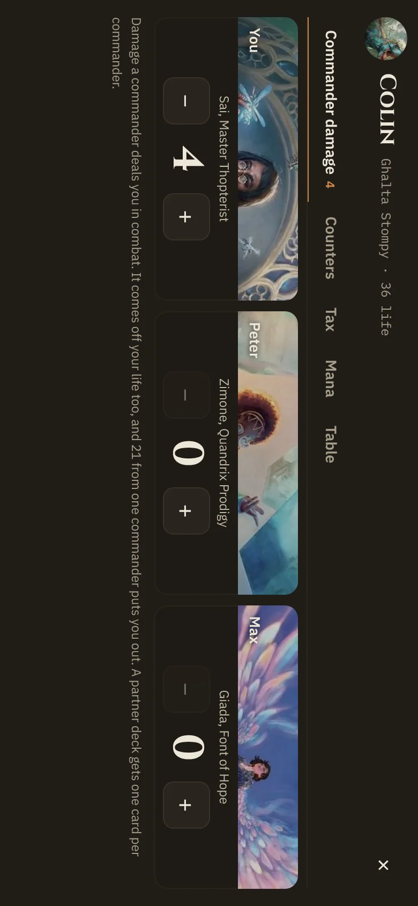
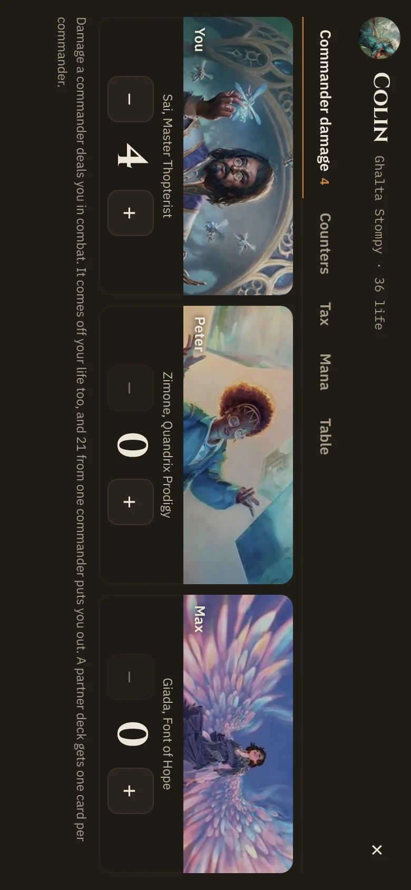
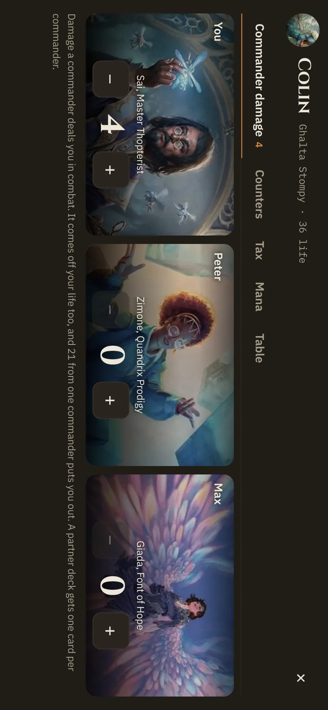
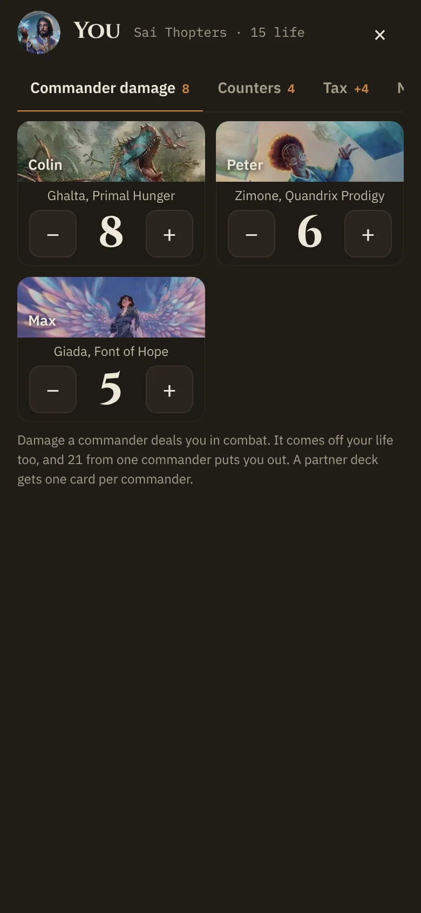
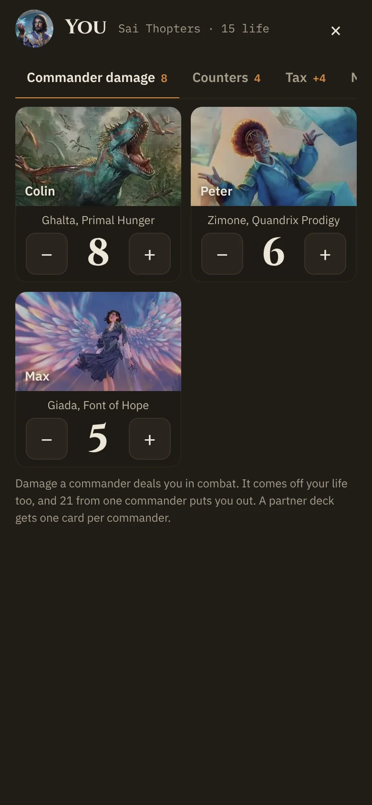
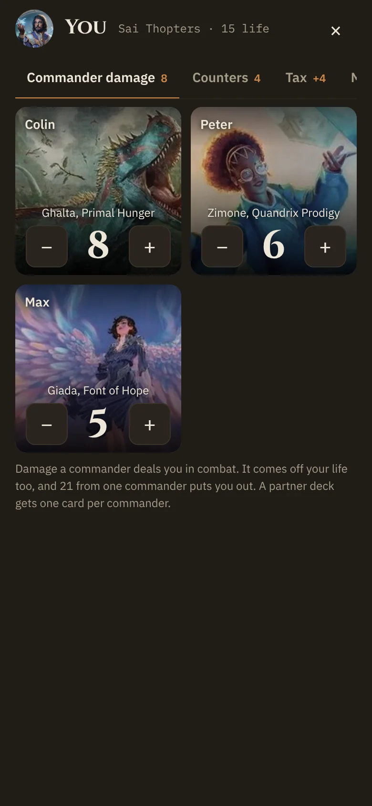

On a phone, each commander damage card in the shelf shows its art as a 56 px strip, and on a sideways seat the rest of the card is empty felt. The iPad and desktop sheet already fills each card with the art under a fade. Two ways to show more on the phone. Fixture: Chris (you, Sai) at a 4-seat table, 8 from Colin's Ghalta, 6 from Peter's Zimone, 5 from Max's Giada; the sideways sheet is Colin's, 4 from Sai. Phone 390 × 844.

Shipped
A 56 px strip on a tall card: most of the card is empty.

A · taller strip
The strip grows to 104 px. The name and stepper keep the plain card under it.

B · art fills the card
The art fills the card; the stepper sits over a dark fade at its foot. Same card as the iPad.

Shipped
Art cut to a band; the face is lost.

A · taller strip
Twice the art; the cards grow 48 px.

B · art fills the card
Most art of the three; the cards grow less than A, since the name moves onto the art.
Rec · B: art fills the card
Q1 · Which card on the phone?
A
A taller 104 px strip; name and steppers stay on the plain card.
B · recommended
The art fills the card under a fade, as on iPad and desktop.
Scope · What changes